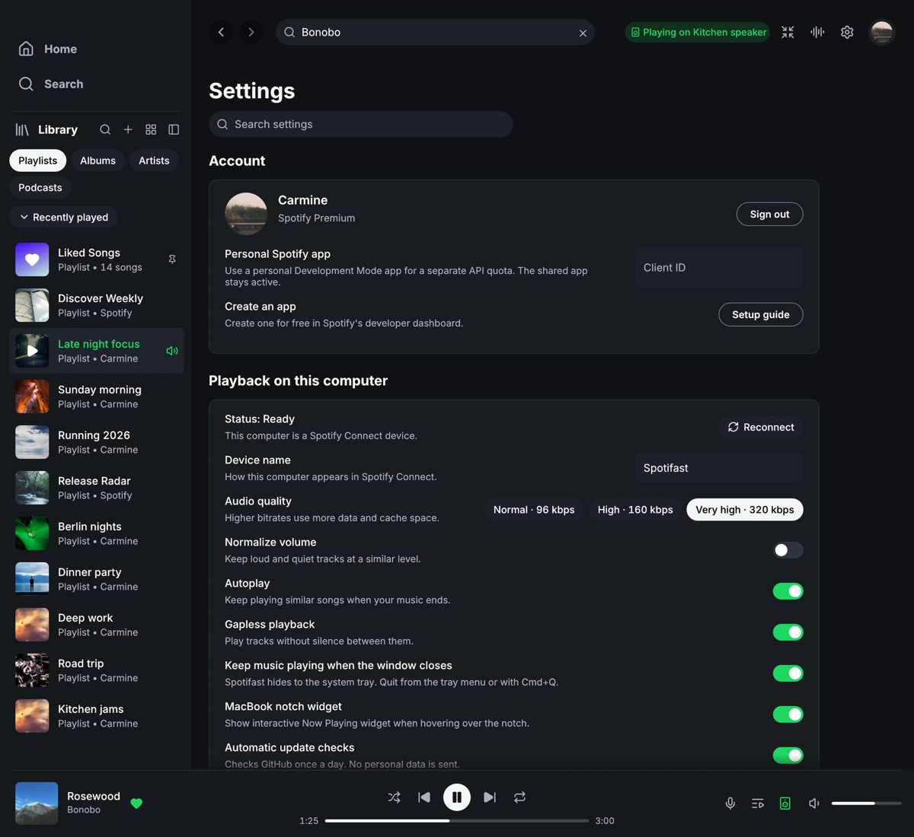
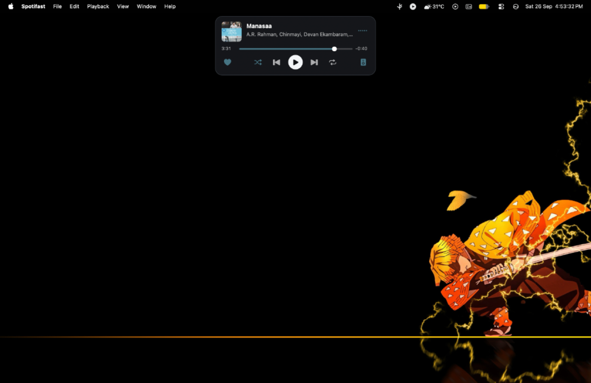
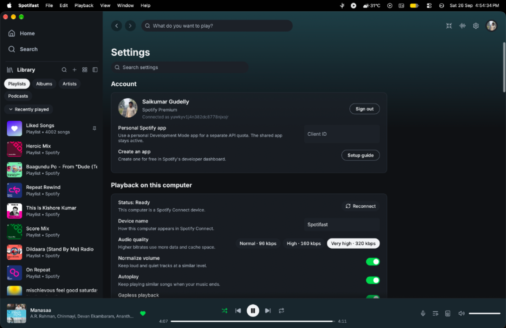
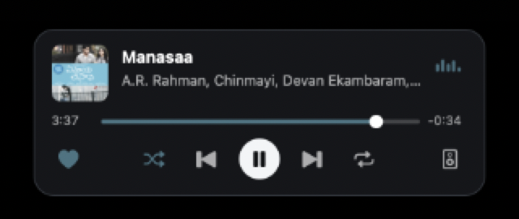
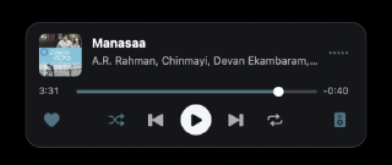

MacBook notch widget visual review

Active Playback Playing
Full desktop view. When hovering the physical notch, track details expand with Spotifast thin_slider seek bar, white circular play disc, transport controls, and live post-EQ visualizer.
Paused Playback Paused
When paused, the playhead freezes at its current position, play disc displays play glyph, and visualizer dots remain flatlined with zero FFT calculations.

Main Window Focused Idle
When the Spotifast main window is focused, the overlay automatically conceals itself so the menu bar and active controls remain unobstructed.

Collapsed State
Resting state flush under physical notch. FFT audio analysis is strictly gated off (zero overhead).
Expanded State (Playing)
Album art, track typography, Spotifast thin_slider seek bar, circular play disc, heart save button, and visualizer.

Paused State
Immediate visual feedback when paused. Play glyph inside circular disc, flatline visualizer, and zero FFT passes.

Remote Playback (Spotify Connect)
Active playback on remote Connect device. Displays track metadata with green speaker icon and flat visualizer.